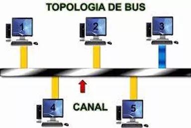
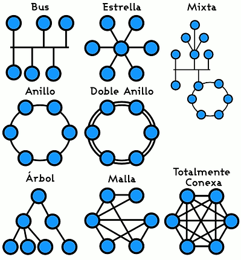

SISTEMA DE REDES TOPOLOGÍA
¿Qué es?
Primero que todo el concepto de red puede definirse como “conjunto
de nodos interconectados”. Y un nodo es el punto de intersección y
conexión de elementos que confluyen en el mismo lugar. Una
Topología de Red se define como un mapa físico o lógico de una red
para intercambiar datos. Es la forma en que está diseñada la red y
como está conectado todo, disponiendo de nodos y líneas de
conexión. Los componentes fundamentales de una red son: el
servidor, los terminales, los dispositivos de red y el medio de
comunicación.

Diagramas de topología de la red
Los diagramas de topología de red mantienen un registro de la
ubicación, la función y el estado de los dispositivos en la red.
Hay dos formas de definir la geometría de la red:
-
La Topología Física: Se refiere a la distribución de las
conexiones físicas e identifica cómo se interconectan los
dispositivos finales y de infraestructura, como los routers, los
switches y los puntos de acceso inalámbrico. Las topologías
físicas generalmente son punto a punto o en estrella. Para
resolver problemas de la capa física, es necesario conocer la
forma en que los dispositivos están conectados físicamente. La
información registrada en el diagrama generalmente incluye:
Tipo de dispositivo.
Modelo y fabricante.
Versión del sistema operativo.
Tipo de cable e identificador.
Especificación del cable.
Tipo de conecto.
Extremos de cable.
-
La Topología Lógica: La topología lógica de la red
ilustra la forma en la que los dispositivos se conectan a la red
de manera lógica, como los dispositivos transfieren datos a
través de la red al comunicarse con otros dispositivos. Los
símbolos se usan para representar los elementos de la red, como
routers, servidores, hosts, concentradores VPN y dispositivos de
seguridad. Adicional, pueden mostrar conexiones entre varios
sitios, pero no representan ubicaciones físicas reales. La
información registrada en un diamante de red lógico puede
incluir lo siguiente:
Identificadores de dispositivos.
Dirección IP y longitudes de prefijos.
Identificadores de interfaz.
Tipos de conexión.
DLCI para circuitos virtuales.
VPN de sitio a sitio.
Protocolos de routing.
Rutas estáticas.
Protocolos de enlace de datos.
Tecnologías WAN utilizadas.
Tipos de topología
Al día de hoy se reconocen ocho tipos básicos de topologías:
Topología Punto a Punto (point to point, PtP).
Topología de Bus (“conductor común”).
Topología Estrella (star).
Topología Anillo (ring) o circular.
Topología Malla (mesh).
Topología Árbol (tree) o jerárquica.
Topología Hibrida (combinada o mixta).
Topología Cadena Margarita (daisy chain).
